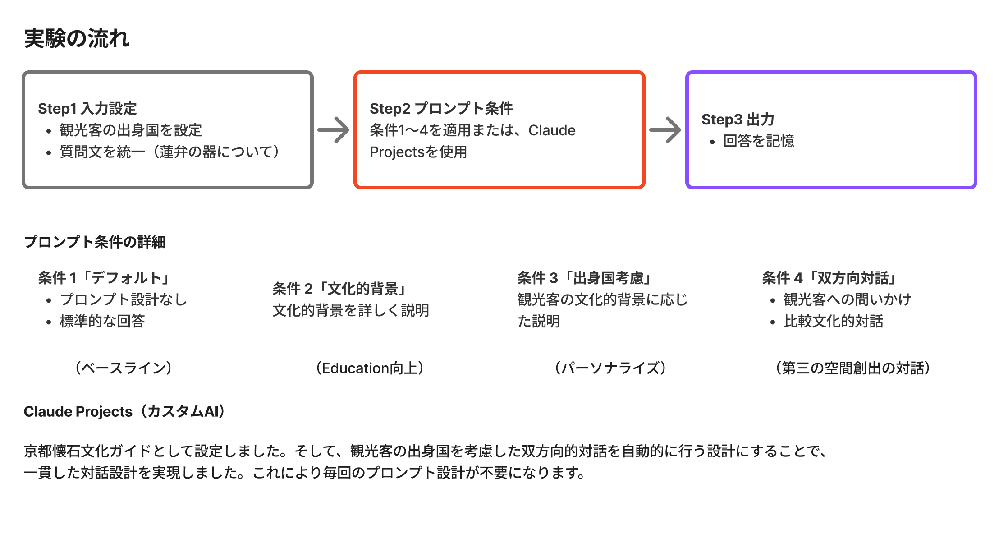
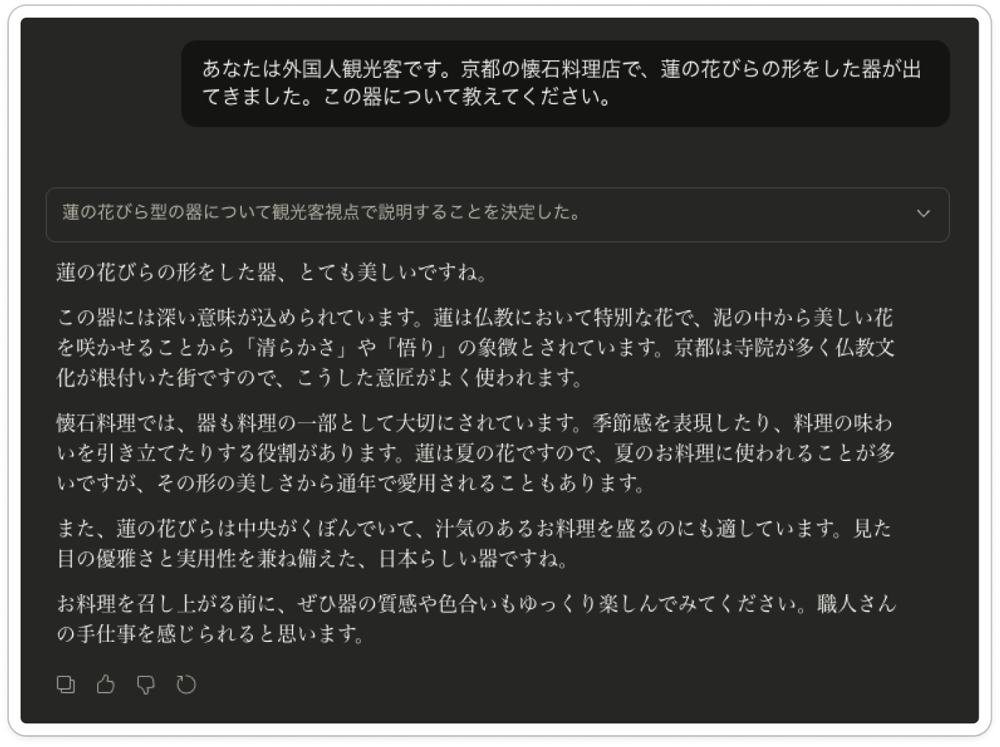
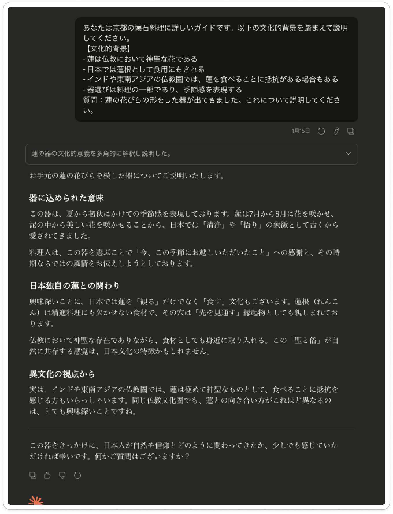
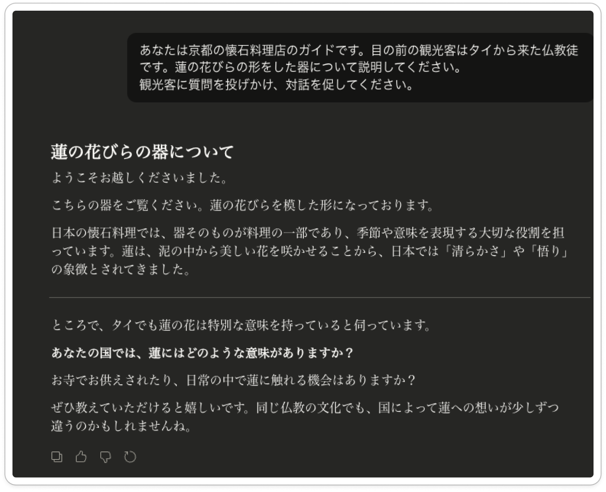

EXPERIMENT
AIは対話できるか ── 4つの条件
Claude（Anthropic）を用い、懐石料理の文化的解釈について4段階のプロンプト条件で実験を行った。 条件①から④に進むにつれ、提供する情報量は減少し、代わりに対話性が上昇する逆説的な構造となっている。

実験デザイン：入力設定 → プロンプト条件（①〜④ + Claude Projects）→ AI出力
条件 01
デフォルト（指示なし）
AIの標準応答。一般的な情報を羅列するが、ゲスト個人への配慮はない。

結果：百科事典的な説明。正確だが「体験」にはならない。
条件 02
役割付与
「京都の料亭の主人として答えてください」と役割を設定。語り口に温かみが生まれるが、相手を見ていない。

結果：もてなしの言葉は増えたが、画一的な説明に留まる。
条件 03
文化背景の注入
ゲストの出身文化・食文化の情報を追加。「フランス料理のコースに似ていますが…」など比較を用いた説明が可能に。

結果：異文化比較による説明が生まれ、理解の架け橋が形成され始める。
条件 04
対話型インタープリテーション
Claude Projectsを活用し、懐石の知識体系を構造化。 ゲストの反応に応じて説明を調整する動的対話を実現。 情報を一方的に与えるのではなく、問いかけから始める。

結果：ゲスト自身の文化体験と懐石を結びつける「第三の空間」が出現。
AIが共創的媒介者として機能した。
「情報量 ↓」 × 「対話性 ↑」 ＝ 深い理解
情報を減らし対話を増やすことで、体験の質が向上するパラドックス

Claude Projectsによる対話例 ── 出身国（タイ・アメリカ・フランス）に応じた問いかけの違い
4Eモデルによる各条件の評価
条件が進むにつれ、4E全領域で評価が向上 ── 特にEducation（学ぶ）が最も顕著に強化される